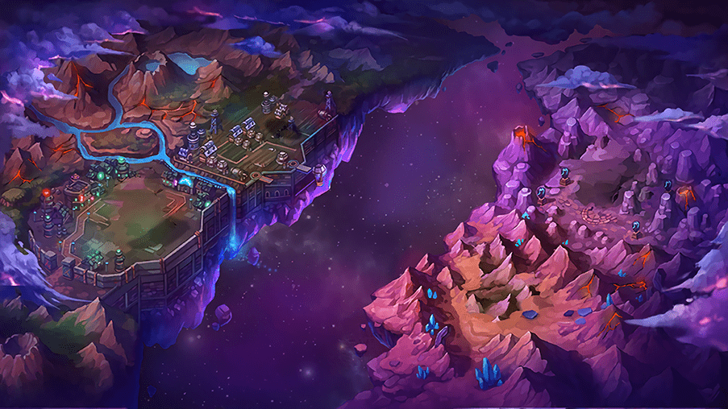
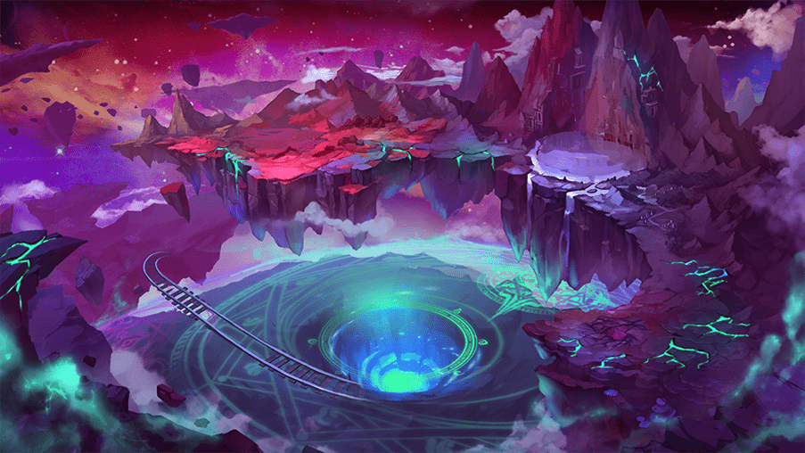

Mundo 1
Kricktria

Kricktria é o mundo inicial da aventura que ocorre em GrandChase Dimensional Chaser.
Neste mundo é introduzido os novos protagonistas Kyle e Cindy, ambos aprendizes do grande mago
Caxias Grandiel.
Vale ressaltar que este mundo não faz parte da dimensão de Ernas.
Mundo 2
Máusfia

O segundo mundo do jogo, Máusfia, existe em uma dimensão diferente do mundo de Kricktria.
Suas únicas terras conhecidas são dividas por um vórtice negro.
Mundo 3
Calnat

Diferente de Kricktria e Máusfia, esta versão de Calnat não é separada da dimensão de Ernas.
Entretanto, trata-se de uma versão passada de Calnat que existia antes da Grande Explosão.
Mundo 4
Mundo dos Demônios - Crimson River

Crimson River é uma das regiões contidas no Mundo dos Demônios, também conhecido como Elyos.
Além de ser a primeira vez em que a GrandChase foi para o Mundo dos Demônios.
Mundo 5
Mundo dos Demônios - Burning Canyon

Uma outra região da dimensão de Elyos, a qual se conecta ao Mundo dos Mortos, sendo uma dimensão
diferente de Elyos e Ernas.